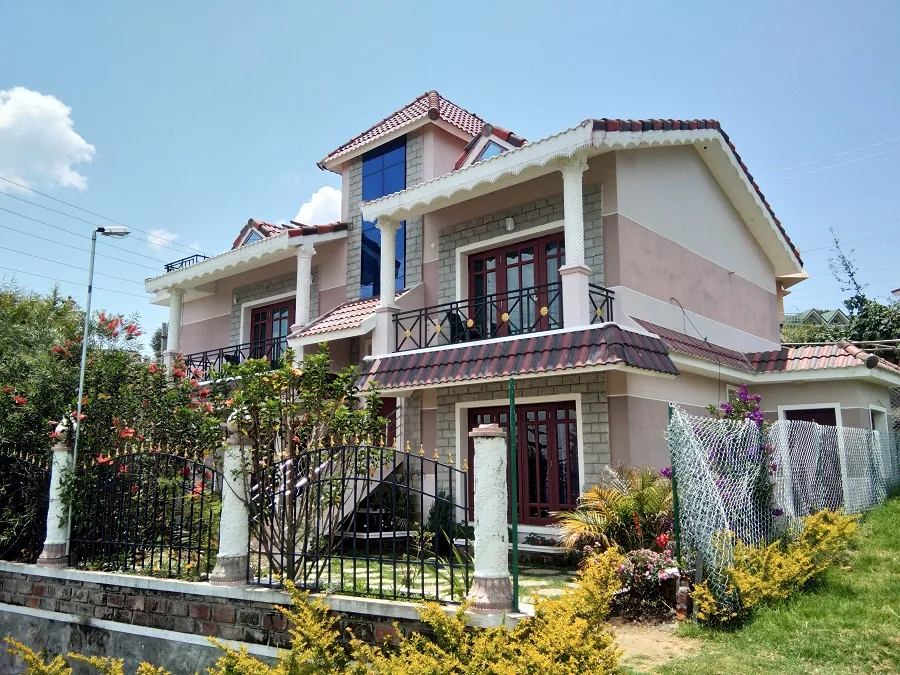
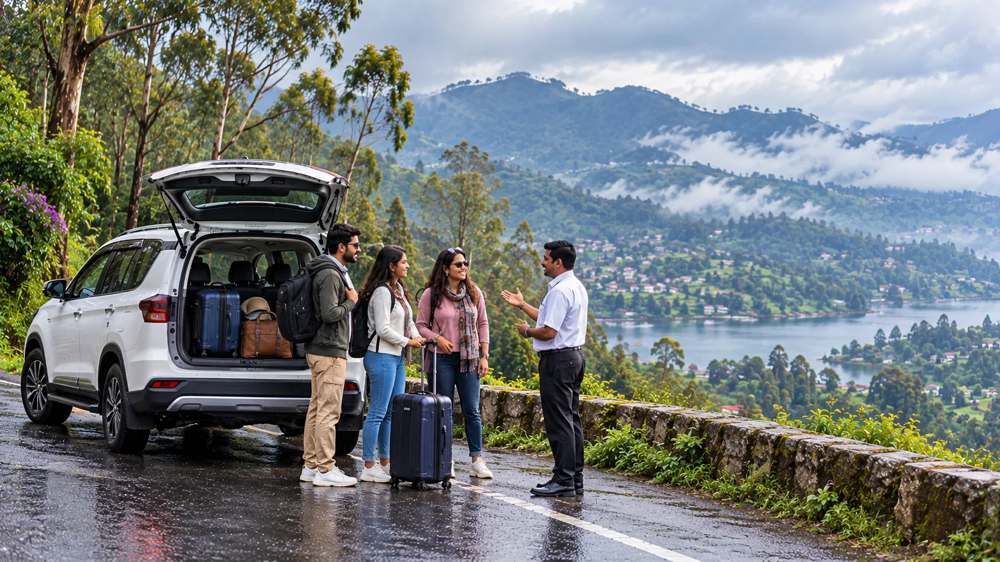
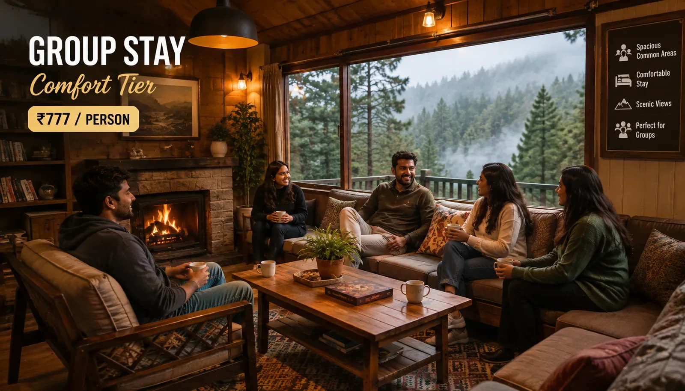

Valley Tour
Terraced slopes and viewpoints over the Vattakanal valley.
View Tour
Valley Tour
Terraced slopes and viewpoints over the Vattakanal valley.
View Tour

Travels in Kodaikanal
Tours, stays, local transport and ready-made packages — planned by a family that's hosted travellers here for 12 years.
Kodaikanal at a Glance
Kodaikanal is a hill station in the Palani Hills of Tamil Nadu, known for its cool climate, pine and shola forests, and a spring-fed lake at its centre. Visitors come for the misty viewpoints and waterfalls, but a trip here also means figuring out where to stay, how to get around, and which sights are worth the drive — Cottages Kodaikanal handles all three, from a single family-run desk.
Your Kodaikanal Adventure Awaits.
0
Signature Tours
0
Years Local Expertise
0
Support on WhatsApp
Featured Tours
Each tour below has its own full itinerary, route map and pricing on its own page.
Valley Tour
Terraced slopes and viewpoints over the Vattakanal valley.
View Tour
 Village Tour
Small hillside villages and local life off the main sightseeing route.
View Tour
Village Tour
Small hillside villages and local life off the main sightseeing route.
View Tour
 Picnic Tour
A relaxed day by Kodaikanal Lake with boating and lakeside food stalls.
View Tour
Picnic Tour
A relaxed day by Kodaikanal Lake with boating and lakeside food stalls.
View Tour
 Berijam Lake Tour
A permit-only forest drive to Kodaikanal's quieter reservoir lake.
View Tour
Berijam Lake Tour
A permit-only forest drive to Kodaikanal's quieter reservoir lake.
View Tour
 Park Tour
Bryant Park's botanical gardens and glasshouse, an easy in-town stop.
View Tour
Park Tour
Bryant Park's botanical gardens and glasshouse, an easy in-town stop.
View Tour
 Adventure Tour
Off-road jeep trails to ridge viewpoints a regular taxi can't reach.
View Tour
Adventure Tour
Off-road jeep trails to ridge viewpoints a regular taxi can't reach.
View Tour
Everything You Need, In One Place

Where to Stay
From private villas and family cottages to budget dormitories, we host every kind of stay in Kodaikanal ourselves — not a listings site, an actual family-run desk that answers on WhatsApp.

Getting Here & Around
Local taxis, self-drive car rental and jeep safaris within Kodaikanal, plus outstation pickup and drop from Coimbatore, Madurai, Dindigul, Palani and Kodai Road.

Guided Sightseeing
A local driver-guide takes you through the major landmarks in one loop, timed to beat the midday crowds.
- Kodaikanal Lake
- Coaker's Walk
- Pillar Rocks
- Silver Cascade Falls

Activities
Beyond sightseeing, Kodaikanal is built for slower outdoor time.
- Trekking on marked forest trails
- Cycling around the lake road
- Boating — pedal, rowing & nature boats on Kodaikanal Lake

Local Finds
The lake-road market strip is where the local flavour is — handwoven woolens, eucalyptus oil, and homemade chocolate from small shopfronts near Kodaikanal Lake, plus artisan stalls selling handicrafts.
Plan Your Trip
Every package below bundles stay, private cab and sightseeing into one WhatsApp quote — personalised, eco-friendly routing and no hidden add-ons.

1 Day
Kodaikanal 1 Day Tour
Lake, Coaker's Walk and Pillar Rocks in a single guided loop.
From ₹XX,XXX / couple
View Package
2 Days
Kodaikanal 2 Day Tour
An unhurried couple's itinerary with a second sightseeing day.
From ₹XX,XXX / couple
View Package
3 Days
Kodaikanal 3 Day Tour
The full hill-station circuit, paced across three unhurried days.
From ₹XX,XXX / couple
View Package
Group
Kodaikanal Group Tour
Multi-room stays and shared transport for reunions, offsites and college trips.
From ₹XX,XXX / person
View PackageFAQs
Common Questions About Travels in Kodaikanal
Can't find your question here? Our team typically replies within the hour.
+91 75023 45777 Enquire Now01 Can I customize a package instead of picking a fixed itinerary?
Yes — every package quote is routed and priced for your dates and group size on WhatsApp, not sold off a fixed shelf.
02 Do you arrange pickup from Coimbatore, Madurai, Dindigul, Palani or Kodai Road?
Yes, outstation pickup and drop is arranged from all five — see the Getting Here section above for direct links to each route.
03 How fast do you reply once I send an enquiry?
Same-day, directly on WhatsApp — it's a local family-run desk answering, not a call centre.
04 Can you arrange stay and transport together, or just one?
Either — book stay only, transport only, or bundle both into one package quote, whichever suits your trip.
05 Do you handle group bookings for reunions or offsites?
Yes — the Group tour package bundles multi-room stays with shared transport for reunions, offsites and college trips.
Ready When You Are
Same-day WhatsApp replies, a local team that actually knows the routes, no third-party markup.